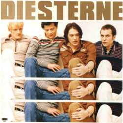

Die waren alle erst so nett zu mir und wollten auch nur meine Personalien. Wann ich wo gewesen wäre und wo danach hin. Nach zwei Stunden in der Zelle dachte ich schon es hört jetzt auf. Da waren andere Männer, die Bärte waren länger und ich wünschte, ich wär' in Italien. Dabei im Hintergrund ein Lied über völlig uncoole Typen. Und ein Riesenarschloch als Held dagegen. Ein anderes über Vergangenes, das immer so freundlich verklärt ist. Dazu die Musik, die dich seidig umspielt, weil sie dir bekannt ist entspannt es.
Du erinnerst dich ja hoffentlich daran wovon die Rede war, fragte ein Jurist in der Bar, während er für einen Freund simultan Übersetzte. Ich sagte dazu alles klar, doch ich scheiß' auf deutsche Texte.
Letzte Bestellung. Schnell noch, bevor ich wieder überlege. Schnell noch den Nachhauseweg gemerkt und all die anderen Rückwege. Hoffentlich sind jetzt schon alle anderen im Koma. Die Theorien von heute Abend glaubt mir nicht mal meine Oma.
Du erinnerst dich ja hoffentlich, wovon du geredet hast, fragte ein Idiot in der Bar, während er für einen Freund simultan übersetzte. Ich sagte dazu alles klar und - ich scheiß' auf deutsche Texte.
Auf dieser Insel behandeln sie das Altern mit Hypnose und behexen deine Falten. Hinterher sind sie nicht mehr, nach dem Schreck sind sie weg. Sie kochen deine Feinde ein, die Freunde werden davon haltbar. In einem Tag hast Du hier deinen Führerschein. Der Handel blüht auch wie bescheuert, überall Verträge. Wenn's nicht mehr liefe, wüßte einer, woran das dann läge. Es gibt für alles einen Fachmann hier, für jeden Mensch und jedes Tier. Unter dieser Sonne, die erst sinkt, wenn alle Kinder schlafen.
Auf der anderen Insel tanzt Carola heute nicht so toll. Ihr Tag war nicht so gut gelaufen, sie träumte schon seit zwölf vom Saufen war dann erst um fünf Uhr voll. An anderen Tagen, könnte ich schwören, will jeder hier zu ihr gehören, sie ist bei Gott die Königin des Vorstadtnachmittags. In all der anderen Leute Träume schleicht sich das, was sie hat.
Nur fürchtet sich der Witz vor der Pointe. Was mach' ich bloß, wenn wieder keiner lacht. Wird auch bald kein Arsch mehr an mich denken, und ich war nur ein Witz für eine Nacht.
Es wär der schönste Tag in seinem Leben. Seit er sich kennt, kann er sich nicht bewegen. Keine Augen, keinen Mund, keine Ohren, keinen Grund irgendwas zu riechen. Wenn sie ihn schieben schüttelt's sehr. Mal schüttelt's mehr, mal weniger. Dann wünscht er sich so sehr er könnte kriechen. Er kröche, wenn er könnte, aufs Schaffott. Er kröche endlich näher noch zu Gott.
Nur fürchtet sich der Witz vor der Pointe. Was mach' ich bloß, wenn wieder keiner lacht. Wird auch bald kein Arsch mehr an mich denken, und ich war nur ein Witz für eine Nacht.
Verirrt im eigenen Treppenhaus, in der ersten Morgenbrise. Ich hab nichts gegen eine Nachricht. Bloß nicht schon wieder diese. Was soll das heißen hier, ich krieg nichts mehr? Ich bin bankrott - Na und? Und ihr? Keine Lust mich überhaupt darum zu kümmern. Diese Scheiße mit dem Geld und ihr Verlauf, reibt dich nur auf. Ich esse eure Suppe nicht. Nein, eure Suppe esse ich nicht. Schon lieber mache ich haufenweise Miese und fahr die neugekaufte Karre auf die Wiese. Daß es Dresche gibt dafür, war immer klar. Die lachen sich doch tot, wenn sich so'n Typ wie ich beschwert. Und lächeln immer noch, wenn er krepiert.
Allein - machen sie dich ein.
(I wanna take a ride on my silver machine)
Hier schieben sich Gebirge über deinen Kopf. Ganz leicht, und wie in Watte eingepackt. Wenn ein Zusammenhang erscheint, scheint er dir verwickelt. Ohne Namen, ohne Worte, nicht mal ein schmutziger Satz. Nicht daß es nichts zu sagen gäbe, nur keinen Platz zum Reden. Was für ein Hohn. Wenn du denkst woanders schon, wirst du leicht müde. Gibt es Leben überhaupt da draußen? Gibt es Bewegung in anderen Räumen? Alles, was du weißt ist, wenn du aufwachst, wirst du darum betteln, wieder zu träumen.
Alles findet früher oder später einen Weg in deinen Körper. Die ganze Szenerie da draußen. Vielleicht in Form von großen Haufen. Sie wirbeln Staub auf. Sie wirbeln alles Durcheinander und rieseln dann die ganze Zeit vor deinen Augen durch kleine Siebe und machen Liebe mit dir und du mit ihnen. Sie wellen sich und kräuseln sich und schäumen. Alles, was du weißt ist, wenn du aufwachst, wirst du darum betteln, wieder zu träumen. Wieder zu.
Es ist so hart, wie eine Mauer, nur ist es sehr viel schlauer, und das sieht jeder, der da durchblickt, oder glaubt, daß er es tut. Die Blende geht andauernd auf und zu, fast wird es lästig. Jeder Gegenstand macht sich verdächtig, sich offensichtlich zu verschwören. So wie die Türen mit den Schlössern, wie die Henker mit den Messern, wie der Wald mit all den Bäumen. Alles, was du weißt ist, wenn du aufwachst, wirst du darum betteln, wieder zu träumen.
Dann geht der Rausch alleine aus. Die Tür bleibt zu und du liegst davor. Du schmeckst es nicht. Du leckst es nur. Denn schließlich ist es Zucker.
Ein kleiner Floh hüpft durch sein Großhirn und schaut sich endlich selber zu. Ich kann das aber nicht aushalten, denkt er sich so. Was hat sich verändert in all dieser Zeit und wo? War ich dabei überhaupt, oder habe ich nur zugeschaut und bemerkt, wie beschäftigt ich war? Machen wir's kurz: da hilft auch kein Selbstfindungskurs mehr - nach dem Vergessen.
All diese Jahre. Mit manchen von ihnen hast du geschlafen, mit anderen nicht, ab und zu hast Du gedacht es ist auch ganz gut, daß das passiert, was passiert ist: Selbstbetrug. Immer hat sich irgendwas ergeben, und es gab immer genug zu bereden. Es gibt Themen genug in deinem eigenem Leben, und wenn sie einmal ausgehen, gibt es Themenläden.
Hält dich das aus, was dich aufhält gehörst du dazu und wie hälst du das aus?
Zwischendurch, der Beschluß, wir sind doch eigentlich ganz froh, doch dann schaust du raus und erkennst: die Verhältnisse, die sind nicht so.
Vielleicht bist du aber auch ganz gut darin, das nicht zu bemerken. Fließt da überhaupt noch Blut in deine Füße, in deinen kindischen Gerechtigkeitssinn.
Immer Schwierigkeiten, immer gerade so zu schaffen, und so macht man sich auf Dauer 'halt zum Schwierigkeitenaffen, trifft befreundete Primaten in den Kneipen und im Garten - wartend. Auf die große Sause. Oder einfach nur oder besser noch, die große Pause.
Hält dich das aus, was dich aufhält gehörst Du dazu und wie hälst du das aus?
(Instrumental)
Ich hab jetzt hundert Tage und ich glaube auch eine Nacht, bei dem Versuch verbracht, mich zu konzentrieren. Das muß der Jet Lag sein, oder nennt man das Kater, Katzenjammer würde ich sagen, aber laß mal Alter, das hat sich schon gelohnt. Ich hatte sie nicht gerade erwartet, doch dann war sie eben da. So ziemlich ohne Warnung und wir beide ohne Ahnung, was daraus würde. Am besten gar nichts dachte ich. Bis nächste Woche, macht nichts, vielleicht ein Anruf. Und dann lief ich durch die Häuser, hab sie überall gesucht, Gott und mich und sie und die Hormone verflucht. Wie der alte Professor und Marlene Dietrich - gut ich bin noch nicht so alt, doch das ist jetzt nicht so wichtig.
An meinen Job war nicht zu denken, meine Arbeitskraft im Arsch. Ich hatte nach und nach verraten, woran mir etwas lag. Freunde zum Beispiel, die sich auf mich verließen; Du merkst an dieser Stelle schon, es war zum Teil beschissen, und ich dachte, das geht nicht. Und das geht auch nicht, das kann so nicht funktionieren. Man kann nicht immer wieder so tun, als gäbe es nichts zu verlieren. Auch wenn's romantisch klingt, klingt's noch lange nicht gut, und vor denen, die noch da sind, zieh' ich erstmal meinen Hut.
Gut, wir gingen durch die Scheiße, und wie wir da so gingen, konnte jeder Blödmann sehen, wie wir aneinander hingen, die ganze Zeit dachten, es wär Morgen vorbei. Wenn's gut läuft eine Woche noch, oder auch zwei. Und dann fing es nicht an aufzuhören, stattdessen wurde es schlimmer und die Zeit summiert sich nicht - zu nichts, so ist das immer. Die war einfach weg und ich hörte uns hoffen: Alle Möglichkeiten offen, vielleicht wird alles gut. Was das dann heißt zwar war uns beiden nicht so klar. Ich meine was ist gut, was ist wahr und was richtig? Ich bin heute noch der Meinung, der ich damals war: das war gar nicht die Frage, wir waren einfach egoistisch.
Eines Tages kommst du heim vom Angeln. Du hattest nichts an der Leine und erst recht nichts gefangen. Deine Augen im Spiegel sind genauso frustriert, als hättest du dich politisch engagiert. Du wirst morgen wieder rausgehen, zeitig aufstehen. Bis du das realisiert hast, braucht es seine Zeit. Du hast keine Illusionen, es ist einfach nur soweit, daß du weißt, daß dir sonst keine Möglichkeit bleibt.
Warst Du nicht fett und rosig. Warst Du nicht glücklich, bis auf die Beschwerlichkeiten. Mit den anderen Kindern streiten. Mit Papa und Mama. Wo fing das an und wann. Was hat dich irritiert. Was hat dich bloß so ruiniert.
Daß sie nicht zuhören wollten oder nichts glauben. Waren sie dumm. Zu dumm um zu verstehen, wovon Du erzählt hast. Wollten sie die Wahrheit rauben und dich einsperren, in ihren Kaktusgarten. Konnten sie damit nicht warten. Was hat dich bloß, was hat dich bloß, was hat dich bloß so ruiniert.
Wo fing das an, was ist passiert. Hast Du denn niemals richtig rebelliert. Kannst Du nicht richtig laufen, oder was lief schief. Und sitzt die Wunde tief in deinem Inneren. Kannst Du dich nicht erinnern. Bist Du nicht immer noch Gott weiß wie privilegiert.
Was hat dich bloß so ruiniert.
Was hat dich bloß so ruiniert...
Sag mir nicht, du wärst zufrieden hier zu sitzen. Mach das Maul auf, komm jetzt nicht mit blöden Witzen. Ich bin da und erreichbar, aber nicht besonders lange. Die Kabel liegen offen auf dem Boden, also nimm sie in die Zange, und hinterher, vielleicht noch mehr.
Stell die Verbindung her.
Meist scheint manches auf den ersten Blick unmöglich. Manches ist es auch, doch es wäre tödlich, das selbst zu glauben solange noch nichts feststeht und die Party zu verlassen, bevor sie losgeht. Da ist kein Geist der diese Dinge für dich regelt. Keiner der die Sache auf's Normalmaß pegelt, wenn sie dann explodiert und du's nicht kontrollierst tut's keiner für dich. Ich kann es auch nicht. Ein Schritt vorher, danach mehr.
Stell die Verbindung her.
Vielleicht können wir uns nicht ausstehen, oder es ist ein schwieriger Prozeß. Manchmal kommt man auch zu dem Ergebnis: es gibt wichtigeres. Ich bin dein Alibi vielleicht oder dein Zeuge. Oder wenn mich einer fragt, sag ich, ich leugne. Ich habe keinen von den Typen je gesehen und ich kann die ganzen Fragen nicht verstehen. Vielleicht, schon schwer. Vielleicht nicht so sehr.
Stell die Verbindung her.
So hübsch war's auf dem Land: eine wunderschöne Scheune. Mit Bienen in den Büschen und alles voller Bäume. Ein lieber alter Bauer saß kauernd auf der Bank. Kleine Kinder in den Wiesen. Wir dachten: ach, wie pittoresk, wenn man es so wie's ist sein läßt.
Es war sehr gut und von Bestand. Kaum einer weiß bis heut', warum es dann verschwand.
Wir hatten Sex in den Trümmern und träumten. Wir fanden uns ganz schön bedeutend.
Ein Mann gab einem anderen Mann, der freundlich war 'ne Mark. Der eine wirkte untersetzt, der andere gab ihm eine Zeitung. Das Kiosk brummte, doch kein Gedrängel - stark, hier gab es gar nichts zu bemängeln. Produkte in den Regalen. Auch in Töpfen oder Schalen.
Perfekter Service. Korrekte Preise. Nur die Lüftung summte leise.
Wir hatten Sex in den Trümmern und träumten. Wir fanden uns ganz schön bedeutend.
Wenn uns der Wind die Köpfe wegblies, war die Geschwindigkeit O.K., fand ich. Du sagtest schneller, schneller, schneller. Ich sagte nee. Es gab Gespräche über den Sinn. Und wir fragten uns andauernd wo das hinführt. Waren wir Helden? Oder [waren wir krank / bekloppt]? Oder beides? Oder noch schlimmer, sind wir's noch immer?
Wir hatten Sex in den Trümmern und träumten. Wir fanden uns ganz schön bedeutend.
(instrumental)
Sie war wohl längere Zeit verreist. Keiner wußte sicher, ob die Adresse noch stimmt. Doch die Auskunft auf dem Zettel immerhin von einem, der sie erst letzte Woche traf. Also ist ein junger Mann auch nicht ganz ohne Hoffnung, als er sich zu ihr auf den Weg macht.
Der alte Müllpark um die Ecke. Mit demseinem Riesenangebot an Drogen. Wo die Plastikfolienmenschen wohnen, wirkt jetzt romantisch, leise, traurig und vertraut.
Der Schlendernde versinkt fast im Morast. Gut, daß es heute nicht so stinkt. Die ganze Zeit mit ihr war eigentlich die Hölle. Immer Angriff gegen Angriff und alles in allem Beschissen. Voller Fehleranalysen und Gewalt im privatestem Bereich. Keine Träne weint er demnach dem noch hinterher und trotzdem schwer ...
Der junge Mann schlurft so daher, wie junge Männer eben schlurfen, wenn sie beschäftigt sind. Wenn wir's nicht besser wüßten dächten wir vielleicht er denkt an's Surfen, an die Sonne und das Meer. Von hier oben aus betrachtet sieht's so aus, als bezieht er seine Energie aus Resten und als müßte man ihn irgendwie vor irgendwas beschützen. Ich wünschte er würde heftig auf die Fresse kriegen.
Und darauf läuft es auch hinaus. Mir scheint er rückt trotz deutlicher Ermahnung der zwei Herren an dieser Stelle im Geschehen sein Portemonnaie nicht raus. Fehler denke ich, scheiße Junge, Fehler. Und ich glaube fast, daß er das auch grad' denkt.
Nach fünf Minuten wacht er auf. Schüttelt sich den Dreck aus seinem Bart. Ein schräger Vogel schnorrt ihn an, doch er bleibt hart. Er hätte auch nichts mehr, selbst wenn er wollte. Das Geld hat er gespart. Er merkt es erst als er in seinen Taschen fingert. Er merkt erst jetzt, daß er sich an fast nichts erinnert. Läuft ein Stück und findet einen Zettel zwischen all dem Flaum. Erschreckt. Lehnt sich an einen Baum und schmeißt ihn weg.